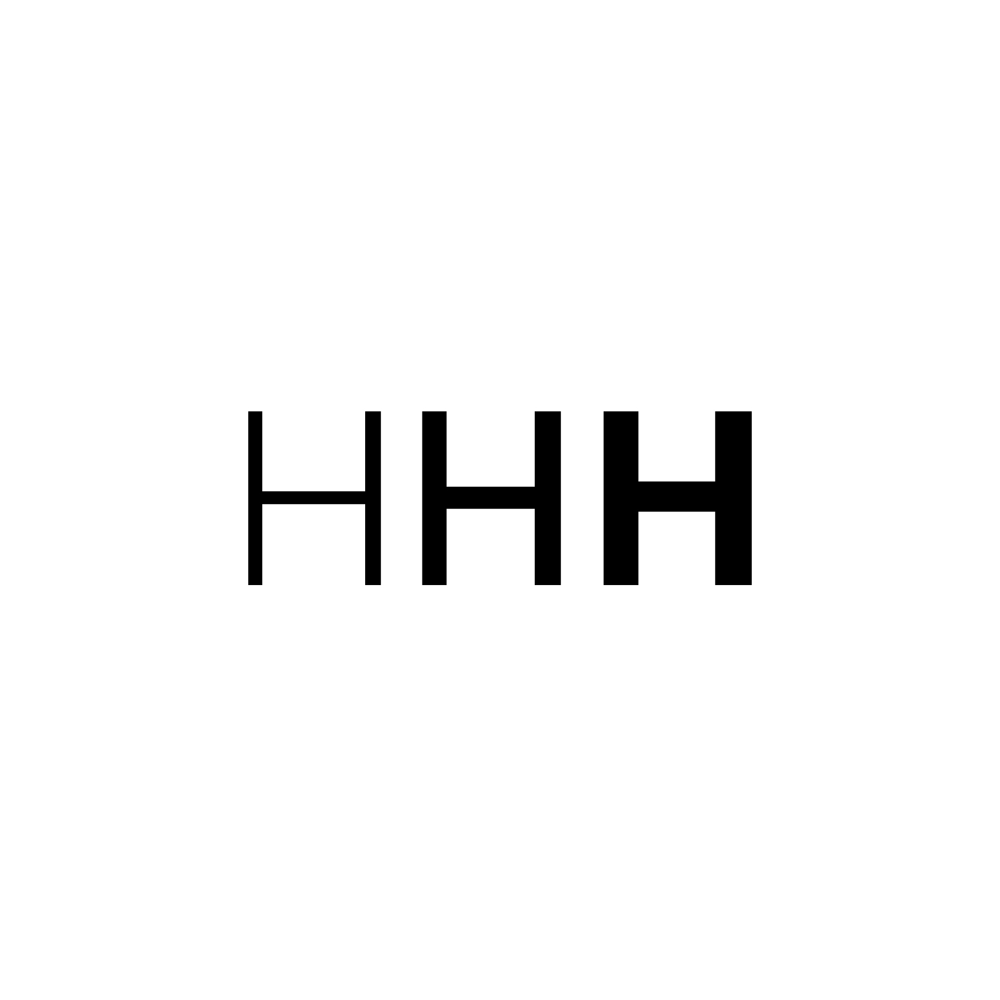

LETTERFORM H
The letter H exercise showed us the basic principles that a typographer might use in creating letter form. The process of studing the letter form H shows us that letter forming doesn’t have a true template and it up the typographer to create the method of forming a font family.This exercise also show the relationship between the light, regular, and bold H’s to work in harmony as a type family. The H also need a balance of negative and positive space in relation to the family.
